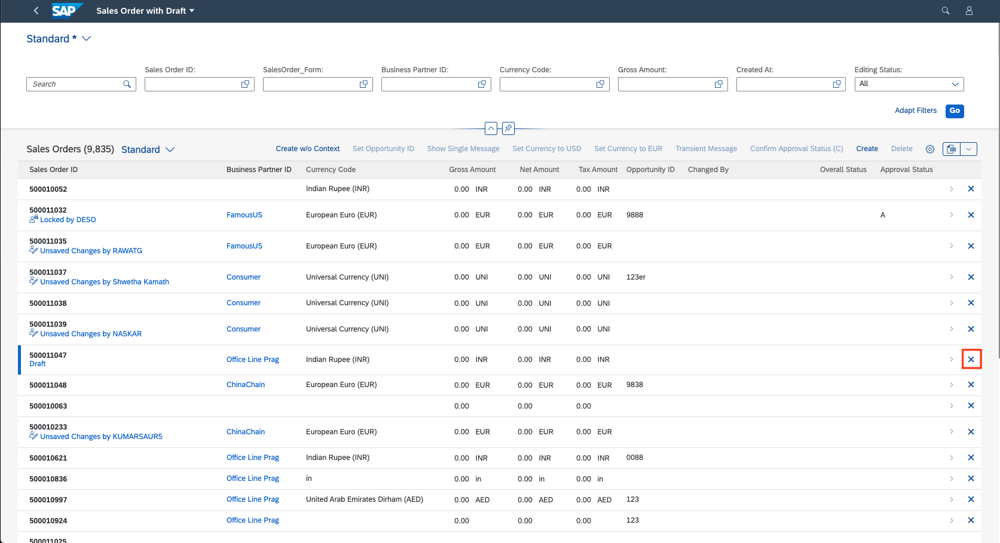

Adding Actions to Tables
Adding Actions to Tables
Generic Actions
SAP Fiori elements provides
two generic actions (Create and Delete)
that can be rendered in the toolbar based on metadata
propertiessap:creatable=true and sap:deletable=true
of the entity set.
Insert capability for the related entities in an object page can be overridden using below options:
Option 1: Using
NavigationRestrictions
The system gives priority
to the
Org.OData.Capabilities.V1.NavigationRestrictions
of the parent entity set if it is defined, and the InsertRestrictions
provided directly at the table entity set level (Option 2 below) is ignored. Depending
on the value of the Insertable property of
InsertRestrictions, the related (table)
entity set is made insertable or not insertable.
-
If
Insertableis set astrue, the related entity set is insertable. -
If
Insertableis set asfalse, the related entity set is not insertable.
<Annotations Target="STTA_PROD_MAN.STTA_PROD_MAN_Entities/STTA_C_MP_Product">
<Annotation Term="Capabilities.NavigationRestrictions">
<Record>
<PropertyValue Property="RestrictedProperties">
<Collection>
<Record>
<PropertyValue Property="NavigationProperty" NavigationPropertyPath="to_ProductText"/>
<PropertyValue Property="InsertRestrictions">
<Record>
<PropertyValue Property="Insertable" Bool="true"/>
<!--Example with Boolean value for InsertRestriction-->
<!-- <PropertyValue Property="Insertable" Path="Insertable"/>-->
<!--Example with path for InsertRestriction-->
</Record>
</PropertyValue>
</Record>
</Collection>
</PropertyValue>
</Record>
</Annotation>
</Annotation>
define behavior for STTA_C_MP_Product
{
create;
delete;
update;
association _ProductText
{ create; }
};annotate STTA_PROD_MAN.STTA_C_MP_Product with @(
Capabilities.NavigationRestrictions : {
RestrictedProperties : [
{
NavigationProperty : to_ProductText,
InsertRestrictions : {
Insertable : true
}
}
]
}
);-
If
Insertableis set astrue, the related entity set is insertable. -
If
Insertableis set asfalse, the related entity set is not insertable.
<Annotations Target="STTA_PROD_MAN.STTA_PROD_MAN_Entities/STTA_C_MP_ProductText">
<Annotation Term="Capabilities.InsertRestrictions">
<Record>
<PropertyValue Property="Insertable" Bool="true" />
<!--Example with Boolean value for InsertRestriction-->
<!-- <PropertyValue Property="Insertable" Path="Insertable"/>-->
<!--Example with path for InsertRestriction-->
</Record>
</Annotation>
</Annotations>annotate STTA_PROD_MAN.STTA_C_MP_ProductText with @(
Capabilities.InsertRestrictions : {
Insertable : true,
}
);See also Enabling Inline Creation of Table Entries on Object Page.
Delete Action
The Delete button can be seen as an action on the table and it is disabled until a selection is made.
DeleteRestrictions also supports path-based values.
The Delete button is enabled by default if
DeleteRestrictions is not provided.
<Annotations Target="SAP__self.Container/SalesOrderManage">
<Annotation Term="SAP__capabilities.DeleteRestrictions">
<Record>
<PropertyValue Property="Deletable" Bool="false"/>
</Record>
</Annotation>
</Annotations>annotate SAP__self.SalesOrderManage with {
SAP__capabilities.DeleteRestrictions : {
Deletable : false
}
};Enable or Disable Delete Button (Using deletable-path Annotations)
You can enable or disable the Delete button in the list report based on conditions specified in the back-end system. For example, you can disable deletion for a sales order that has already been paid. In this case, if a user selects an item that cannot be deleted, the Delete button is disabled. In addition, if the user navigates from this item in the list report to the object page, the Delete button is hidden.
In your annotation, set the deletable-path to point to a particular
property of an object (entity) in the back-end system that is either
true or false. If the value of this property is
true, the Delete button is enabled; if it
is false, it is disabled. If you want to use the
deletable-path annotation to specify conditions for deletion, you
have to ensure that the setting sap:deletable is not present in your
annotations.
The code sample below shows you how to set up your annotation to enable or disable
the Delete button, based on the value of the
Delete_mc property in the back-end
system.
<Annotations Target="STTA_PROD_MAN.STTA_PROD_MAN_Entities/STTA_C_MP_Product">
<Annotation Term="Org.OData.Capabilities.V1.DeleteRestrictions">
<Record>
<PropertyValue Property="Deletable" Path="Delete_mc"/>
</Record>
</Annotation>
</Annotations>App-Specific Actions
Tables can also show application-configured actions. These can either be custom actions configured in the manifest.json, or can come from annotations.
Custom Actions (manifest.json)
Applications can define custom table toolbar actions via enhancements to the manifest.json file. For more information, refer to the corresponding sections in Adding Custom Actions Using Extension Points.
Annotation-Based Actions
The following types of actions are supported:
-
Actions that trigger a back-end call through the OData service, for example, Approve or Unblock, represented by the complex type
DataFieldForAction - Actions that trigger navigation, for example to a different app, represented by the
complex type
DataFieldForIntentBasedNavigation. For more information, see Navigation from an App (Outbound Navigation).
Annotation-based actions can be inline actions. Inline actions are used to trigger
actions directly for a single table row. Such an action will show up within the table
control as a separate column. To set an action as an inline action, set the
Inline property to true. The line item actions are
then displayed as shown below:

Specifying Text for App-Specific Actions
To specify a
text for your action, use the
com.sap.vocabularies.UI.v1.DataFieldForAction property and specify
the text to display. The example below shows you how to display an action to create a
copy of the list item in the toolbar:
Sample Code
For more information about adding a button triggering external navigation, see Navigation from an App (Outbound Navigation).
For information about context-dependent and context-independent actions, see Actions.
The following code sample
shows how to create your annotations for line item actions. Note that the
UI.LineItem vocabulary term is used to define the columns for the
smart table.
UI.LineItem
<Annotation Term="UI.LineItem">
<Collection>
<Record Type="UI.DataFieldForAction">
<PropertyValue Property="Label" String="Copy with new Supplier"/>
<PropertyValue Property="Action"
String="STTA_PROD_MAN.STTA_PROD_MAN_Entities/STTA_C_MP_ProductCopywithparams"/>
<PropertyValue Property="InvocationGrouping"
EnumMember="UI.OperationGroupingType/Isolated"/>
</Record>
<Record Type="UI.DataFieldForAction">
<PropertyValue Property="Label" String="Activate"/>
<PropertyValue Property="Action"
String="STTA_PROD_MAN.STTA_PROD_MAN_Entities/STTA_C_MP_ProductActivation"/>
<PropertyValue Property="InvocationGrouping"
EnumMember="UI.OperationGroupingType/ChangeSet"/>
</Record>
<Record Type="UI.DataField">
<PropertyValue Property="Value" Path="Product"/>
<Annotation Term="UI.Importance" EnumMember="UI.ImportanceType/High"/>
</Record>
<Record Type="UI.DataField">
<PropertyValue Property="Value" Path="ProductCategory"/>
<Annotation Term="UI.Importance" EnumMember="UI.ImportanceType/High"/>
</Record>
<Record Type="UI.DataField">
<PropertyValue Property="Value" Path="to_Supplier/CompanyName"/>
<Annotation Term="UI.Importance" EnumMember="UI.ImportanceType/High"/>
</Record>
<Record Type="UI.DataField">
<PropertyValue Property="Criticality" Path="to_StockAvailability/StockAvailability"/>
<PropertyValue Property="Value" Path="to_StockAvailability/StockAvailability"/>
<Annotation Term="UI.Importance" EnumMember="UI.ImportanceType/High"/>
</Record>
<Record Type="UI.DataField">
<PropertyValue Property="Value" Path="Price"/>
<Annotation Term="UI.Importance" EnumMember="UI.ImportanceType/High"/>
</Record>
<Record Type="UI.DataFieldForAction">
<PropertyValue Property="Label" String="Copy"/>
<PropertyValue Property="Action"
String="STTA_PROD_MAN.STTA_PROD_MAN_Entities/STTA_C_MP_ProductCopy"/>
<PropertyValue Property="Inline" Bool="true"/>
<PropertyValue Property="InvocationGrouping"
EnumMember="UI.OperationGroupingType/Isolated"/>
</Record>
<Record Type="UI.DataFieldForIntentBasedNavigation">
<PropertyValue Property="Label" String="Manage Products (ST)"/>
<PropertyValue Property="SemanticObject" String="EPMProduct"/>
<PropertyValue Property="Action" String="manage_st"/>
<PropertyValue Property="Inline" Bool="true"/>
</Record>
<Record Type="UI.DataFieldWithIntentBasedNavigation">
<PropertyValue Property="Label" String="Weight (with IBN)" />
<PropertyValue Property="Value" Path="Weight"/>
<PropertyValue Property="SemanticObject" String="EPMProduct" />
<PropertyValue Property="Action" String="manage_st"/>
</Record>
</Collection>
</Annotation>
@UI.lineItem: [
{
label: 'Copy with new Supplier',
dataAction: 'PUSHDOWN:STTA_C_MP_ProductCopywithparams',
invocationGrouping: #ISOLATED,
type: #FOR_ACTION,
position: 1
},
{
label: 'Activate',
dataAction: 'PUSHDOWN:STTA_C_MP_ProductActivation',
invocationGrouping: #CHANGE_SET,
type: #FOR_ACTION,
position: 2
},
{
importance: #HIGH,
value: 'PRODUCT',
type: #STANDARD,
position: 3
},
{
label: 'Copy',
dataAction: 'PUSHDOWN:STTA_C_MP_ProductCopy',
invocationGrouping: #ISOLATED,
type: #FOR_ACTION,
position: 8
},
{
label: 'Manage Products (ST)',
semanticObjectAction: 'manage_st',
type: #FOR_INTENT_BASED_NAVIGATION,
position: 9
}
]
PRODUCT;
@UI.lineItem: [
{
importance: #HIGH,
value: 'PRODUCTCATEGORY',
type: #STANDARD,
position: 4
}
]
PRODUCTCATEGORY;
@UI.lineItem: [
{
importance: #HIGH,
value: 'TO_SUPPLIER/COMPANYNAME',
type: #STANDARD,
position: 5
}
]
TO_SUPPLIER/COMPANYNAME;
@UI.lineItem: [
{
importance: #HIGH,
criticality: 'TO_STOCKAVAILABILITY/STOCKAVAILABILITY',
value: 'TO_STOCKAVAILABILITY/STOCKAVAILABILITY',
type: #STANDARD,
position: 6
}
]
TO_STOCKAVAILABILITY/STOCKAVAILABILITY;
@UI.lineItem: [
{
importance: #HIGH,
value: 'PRICE',
type: #STANDARD,
position: 7
}
]
PRICE;
@UI.lineItem: [
{
label: 'Weight (with IBN)',
value: 'WEIGHT',
semanticObjectAction: 'manage_st',
type: #WITH_INTENT_BASED_NAVIGATION,
position: 10
}
]
@Consumption.semanticObject: 'EPMProduct'
WEIGHT;
UI.LineItem : [
{
$Type : 'UI.DataFieldForAction',
Label : 'Copy with new Supplier',
Action : 'STTA_PROD_MAN.STTA_PROD_MAN_Entities/STTA_C_MP_ProductCopywithparams',
InvocationGrouping : #Isolated
},
{
$Type : 'UI.DataFieldForAction',
Label : 'Activate',
Action : 'STTA_PROD_MAN.STTA_PROD_MAN_Entities/STTA_C_MP_ProductActivation',
InvocationGrouping : #ChangeSet
},
{
$Type : 'UI.DataField',
Value : Product,
![@UI.Importance] : #High
},
{
$Type : 'UI.DataField',
Value : ProductCategory,
![@UI.Importance] : #High
},
{
$Type : 'UI.DataField',
Value : to_Supplier.CompanyName,
![@UI.Importance] : #High
},
{
$Type : 'UI.DataField',
Criticality : to_StockAvailability.StockAvailability,
Value : to_StockAvailability.StockAvailability,
![@UI.Importance] : #High
},
{
$Type : 'UI.DataField',
Value : Price,
![@UI.Importance] : #High
},
{
$Type : 'UI.DataFieldForAction',
Label : 'Copy',
Action : 'STTA_PROD_MAN.STTA_PROD_MAN_Entities/STTA_C_MP_ProductCopy',
Inline : true,
InvocationGrouping : #Isolated
},
{
$Type : 'UI.DataFieldForIntentBasedNavigation',
Label : 'Manage Products (ST)',
SemanticObject : 'EPMProduct',
Action : 'manage_st',
Inline : true
},
{
$Type : 'UI.DataFieldWithIntentBasedNavigation',
Label : 'Weight (with IBN)',
Value : Weight,
SemanticObject : 'EPMProduct',
Action : 'manage_st'
}
]
In the example above, the order in which the record types are presented in the annotation determines the order in which they appear in the table columns:
-
For the first two record types, the
DataFieldForActioncomplex type does not contain theInlineproperty, which means that the action button will appear in the smart table toolbar. If theInlineproperty is there and set tofalse, the action button is also displayed in the smart table toolbar. -
With the next five record types, the
DataFieldcomplex type is used to define the data for a column within the smart table. -
With the last two record types, the
DataFieldForActionandDataFieldForIntentBasedNavigationcomplex types are used and contain theInlineproperty which is set totrue. This means the action buttons will appear in every row in the appropriate column within the smart table. -
With the last record type, the
DataFieldWithIntentBasedNavigationcomplex type is used to render the property value as a link allowing for navigation to the semantic object.
Delete Action
The Delete button is enabled by default if
DeleteRestrictions is not provided. Note that if you want to
specify conditions for deletion (using the deletable-path
annotation), you must ensure that the setting sap:deletable has not
been made.
Inline Deletion of Rows in Tables
You can enable inline deletion in a table of list report and object page. This can be
enabled by setting the inlineDelete property to
true for tableSettings as shown below:
"tableSettings": {
"inlineDelete": true
}
After you enable this setting, a Delete button is displayed at the end of the row in the table.

-
The inline deletion is only possible for responsive table types.
-
The
inlineDeleteandmultiselectcannot be enabled simultaneously. If both are enabled, the application fails to load. -
If you have set delete restrictions and the restriction path property is set to false for the item, the item cannot be deleted.
Show or Hide the Create Button
You can control the visibility of the Create button depending
on the UI.CreateHidden annotation. The annotation can be a Boolean
value or can point to a path. In your annotation, set the path to point to a
particular property (either true or false) of the parent object. If the value of the
property is true, then the Create button is
hidden; if it is false, it is visible.
The code sample below shows you how to hide or show the Create
button, depending on the isCreateHidden property of the parent
entity.
<Annotations Target="com.c_salesordermanage_sd.EntityContainer/HeaderPartner"> <Annotation Term="UI.CreateHidden" Path="owner/isCreateHidden"/> </Annotations>
Annotate com.c_salesordermanage_sd.HeaderPartner with @( UI.CreateHidden: owner.isCreateHidden);
Show or Hide the Delete Button
You can control the visibility of the Delete button depending
on the UI.DeleteHidden annotation. The annotation can be a Boolean
value or can point to a path. In your annotation, set the path to point to a
particular property (either true or false) of the parent object. If the value of the
property is true, then the Delete button is
hidden; if it is false, it is visible.
The code sample below shows you how to hide or show the Delete
button, depending on the isDeleteHidden property of the parent
entity.
<Annotations Target="com.c_salesordermanage_sd.EntityContainer/HeaderPartner"> <Annotation Term="UI.DeleteHidden" Path="owner/isDeleteHidden"/> </Annotations>
annotate com.c_salesordermanage_sd.SalesOrderManage with @( UI.DeleteHidden: owner.isDeleteHidden);
Enable the Update or Delete Feature
for the Table
Application developers can control the editability of table fields using
UpdateRestrictions.
<Annotations Target="com.c_salesordermanage_sd.EntityContainer/Material">
<Annotation Term="Capabilities.UpdateRestrictions">
<Record Type="Capabilities.UpdateRestrictionsType">
<PropertyValue Property="Updatable" Path="owner.isUpdatable"/>
</Record>
</Annotation>
</Annotations>
Application developers can control the Delete functionality of
tables by using DeleteRestrictions.
<Annotations Target="com.c_salesordermanage_sd.EntityContainer/Material">
<Annotation Term="Capabilities.DeleteRestrictions">
<Record Type="Capabilities.DeleteRestrictionsType">
<PropertyValue Property="Deletable" Path="owner.isDeletable"/>
</Record>
</Annotation>
</Annotations>
The system gives priority to the
Org.OData.Capabilities.V1.NavigationRestrictions of the parent
entity set. Depending on the value of the Deletable property of
DeleteRestrictions, the related Delete
button is shown or not.
-
If
NavigationRestrictionshas the settingDeletable=false, the Delete button for the child entity table is never visible. -
If
NavigationRestrictionshas the settingDeletable=trueor a path, the visibility of the Delete button for the child entity table depends on the value ofUI.DeleteHiddenof the child entity (that is, the table entity).
<Annotations Target="STTA_PROD_MAN.STTA_PROD_MAN_Entities/STTA_C_MP_Product">
<Annotation Term="Capabilities.NavigationRestrictions">
<Record>
<PropertyValue Property="RestrictedProperties">
<Collection>
<Record>
<PropertyValue Property="NavigationProperty" NavigationPropertyPath="to_ProductText"/>
<PropertyValue Property="DeleteRestrictions">
<Record>
<PropertyValue Property="Deletable" Bool="false"/>
</Record>
</PropertyValue>
</Record>
</Collection>
</PropertyValue>
</Record>
</Annotation>
</Annotation>
CDS annotation for
deletable-path:
annotate com.c_salesordermanage_sd.SalesOrderManagewith @Capabilities: {Insertable: false, Deletable:’isDeletable’, Updatable: true}Bound and Unbound Actions
Actions can either be classified as bound or unbound. Bound actions are those that
need a context from the underlying control. Such actions cannot be invoked without
passing a context (usually selected by user actions, such as selecting a row from a
table). In the metadata, these actions are marked with the IsBound
property.
<Action Name="REUNION" IsBound="true"> <!-- Bound action having a parameter --> <Parameter Name="_it" Type="com.sap.gateway.srvd.sadl_gw_appmusicro_definition.v0001.ArtistsType" Nullable="false" /> <ReturnType Type="com.sap.gateway.srvd.sadl_gw_appmusicro_definition.v0001.ArtistsType" Nullable="false" /> </Action>
When an action is inside a control, the bound and unbound actions are referred
differently. A bound action is referred via
<SchemaNamespace>.<ActionName> whereas an unbound
action is referred via
<SchemaNamespace>.<EntityContainerName>/<ActionImportName>.
<Annotation Term="UI.LineItem">
<Collection>
<Record Type="UI.DataField">
<PropertyValue Property="Value" Path="Name" />
</Record>
<Record Type="UI.DataFieldForAction">
<PropertyValue Property="Label" String="Break Up" />
<PropertyValue Property="Action" String="com.sap.gateway.srvd.sadl_gw_appmusicro_definition.v0001.MyContainer/BREAK_ACTION" />
<!-- An unbound action (BREAK_ACTION) referred via <SchemaNamespace>.<EntityContainerName>/<ActionImportName> -->
<PropertyValue Property="InvocationGrouping" EnumMember="UI.OperationGroupingType/Isolated" />
<PropertyValue Property="Determining" Bool="true" />
</Record>
<Record Type="UI.DataField">
<PropertyValue Property="Label" String="My Country" />
<PropertyValue Property="Value" Path="CountryOfOrigin" />
</Record>
<Record Type="UI.DataFieldForAction">
<PropertyValue Property="Label" String="Reunion" />
<PropertyValue Property="Action" String="com.sap.gateway.srvd.sadl_gw_appmusicro_definition.v0001.REUNION" /> <!-- A bound action (REUNION) referred via <SchemaNamespace>.<ActionName> -->
<PropertyValue Property="InvocationGrouping" EnumMember="UI.OperationGroupingType/Isolated" />
</Record>
....
....
</Collection>
</Annotation>The visibility of the action is controlled via UI.Hidden annotation
and the enablement is controlled via OperationAvailable annotation.
For more information, see Actions.
Enabling Single Selection for a Bound Action
Applications can control the number of table records that need to be selected for the
action to be enabled. By default, for a bound action, this is 1 or more applicable
records (that is, 1 or more records for which OperationAvailable
evaluates to true). However, applications can change this configuration so that the
action is enabled only when a single applicable record is selected. If more records
are selected, then the action is disabled again. They can do this by specifying the
enableOnSelect property in the manifest:
Table Actions
"@com.sap.vocabularies.UI.v1.LineItem": {
"actions": {
"DataFieldForAction::com.c_salesordermanage_sd.CreateWithSalesOrderType": {
"enableOnSelect": "single” // Possible values: "single", "multi" (default)
}
}
}Chart Actions
"@com.sap.vocabularies.UI.v1.Chart": {
"actions": {
"DataFieldForAction::com.c_salesordermanage_sd.CreateWithSalesOrderType": {
"enableOnSelect": "single” // Possible values: "single", "multi" (default)
}
}
}
-
The setting is not applicable for inline actions (where only the context of the row of the pressed button is passed) and for static or unbound actions (where no context is passed).
-
The feature is currently supported for annotation-based actions only.
Handling of Non-Computed Key Fields and Immutable Fields
When you create new table records using the POST mechanism, that is,
not using NewAction, and provided that the entity set on which the
create is being performed has visible non-computed key fields,
then these fields are brought up in a dialog so that users can enter values before
the create is performed. Since the key fields are immutable, that
is, not changeable after the initial create, the dialog is the only
chance for users to enter values. This is also true for the other non-key immutable
fields (non-hidden and non-computed) in the main entity set.
Rendering Buttons with Icon Instead of Text
The text for the inline DataFieldForAction and the
DataFieldForIntentBasedNavigation buttons can be replaced with an
icon, as specified in the "IconUrl" annotation property. The label
of the button then appears as the tooltip of the button.
-
If you use icons, the
"Criticality"of theDataFieldForActionandDataFieldForIntentBasedNavigationis ignored. -
The feature is supported only for inline table actions and navigation buttons, not for buttons used elsewhere.
-
Use icon buttons only for very basic standard icon metaphors. For more information, see
Sample Code
UI Annotations for
"IconURL"
<Record Type="UI.DataFieldForAction">
<PropertyValue Property="Label" String="Navigate via Action"/>
<PropertyValue Property="Action" String="com.c_salesordermanage_sd.ActionNavigation"/>
<PropertyValue Property="Inline" Bool="true"/>
<PropertyValue Property="IconUrl" String="sap-icon://arrow-right"/>
</Record>
<Record Type="UI.DataFieldForIntentBasedNavigation">
<PropertyValue Property="SemanticObject" String="v4Freestyle"/>
<PropertyValue Property="Action" String="Inbound"/>
<PropertyValue Property="Label" String="IBN Inline"/>
<PropertyValue Property="RequiresContext" Bool="true"/>
<PropertyValue Property="Inline" Bool="true"/>
<PropertyValue Property=" IconUrl" String="sap-icon://arrow-left"/>
</Record>SAP Cloud Application Programming Model CDS Annotation
{
$Type : 'UI.DataFieldForAction',
Label : 'Navigate via Action',
Action : 'com.c_salesordermanage_sd.ActionNavigation',
Inline : true,
IconUrl : 'sap-icon://arrow-right'
},
{
$Type : 'UI.DataFieldForIntentBasedNavigation',
SemanticObject : 'v4Freestyle',
Action : 'Inbound',
Label : 'IBN Inline',
RequiresContext : true,
Inline : true,
IconUrl : 'sap-icon://arrow-left'
}Grouping Actions as Menu Buttons
Actions that have a similar business purpose can be grouped together and rendered in the form of menu buttons. For more information, see Actions.